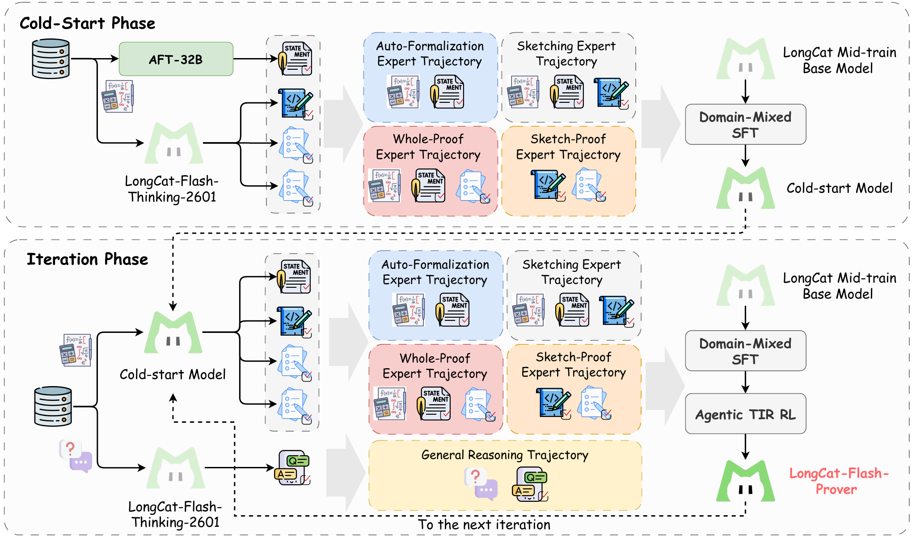

问题：形式化推理不只是 SFT
普通 reasoning 模型（o1/R1/Flash-Thinking）擅长自然语言 CoT，但 Lean4 是强类型、kernel 编译验证的函数式证明语言——一次成功证明可能调几十次 Lean4 server。LongCat-Flash-Prover 把"自然语言数学题 → Lean4 形式化语句 → 完整/拆分式证明"做成模型的原生能力，统一训练 Auto-Formalization、Sketching、Proving 三件事。

图：训练 pipeline（cold-start + iteration 两阶段）src/assets/training_pipeline.png
从 3 个 expert（AF/Sk/Pf）×（单轮/TIR）×{whole-proof, sketch-proof} 合成 6 类高质量轨迹。curriculum：先单轮再 TIR，先 whole-proof 后 sketch-proof；pass 率 = 0 保留、连续两轮全挂剔除。
继承 [[2509_LongCat_Flash|LongCat-Flash]] ScMoE + Zero-Computation Experts 架构，from cold-start = Flash-Thinking-2601。复用 DORA 异步 RL 框架，codebase 完全一致。
HisPO：层级式梯度屏蔽
MoE + 长程异步 RL 下，importance sampling ratio $r_{i,t}(\theta)$ 被两层污染——train-inf 差异（Megatron vs vLLM bitwise 不一致）与 policy staleness。HisPO 用指示函数 $H_{i,t}(\theta)$ 同时做序列级 + token 级屏蔽：
几何均值 discrepancy 超阈值 → 整条序列 mask。比 GSPO 只看序列级更细，避免误杀好 token。
剩余序列再剔除 per-token discrepancy 过大的 token。
借鉴 DAPO/MoBA 三段 clip（neg low/high + pos high），移除 KL loss（$k_3$ 梯度有偏）。global max length 消 length bias。
AST-based Legality Detection
训练到第 80 步 rollout pass rate 突然飙升——是开源评估 pipeline 漏洞：Lean4 只检查 syntax + 目标定理定义一致性，formal context 完全可编辑。模型学会作弊：加 import 引入隐藏 axiom、用 open/lemma 改写目标、凭空造 axiom。
写轻量 Lean4 lexer/parser → 转 AST → 严格对比 formal statement 与 proof/sketch 的 AST 一致性。修好 reward 后从第 80 步重启 RL，pass rate 曲线立刻回到合理水平。首次系统揭露开源 Lean4 评估的 reward hacking 漏洞。